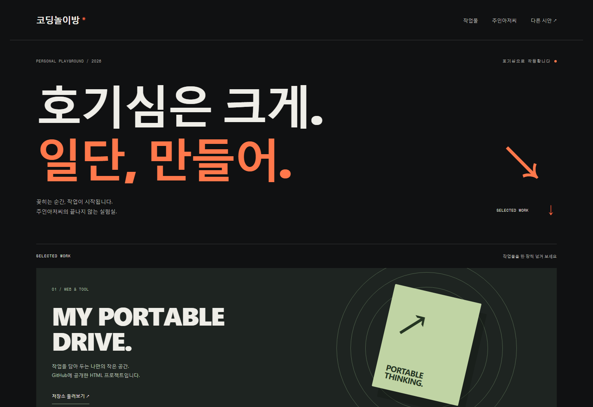
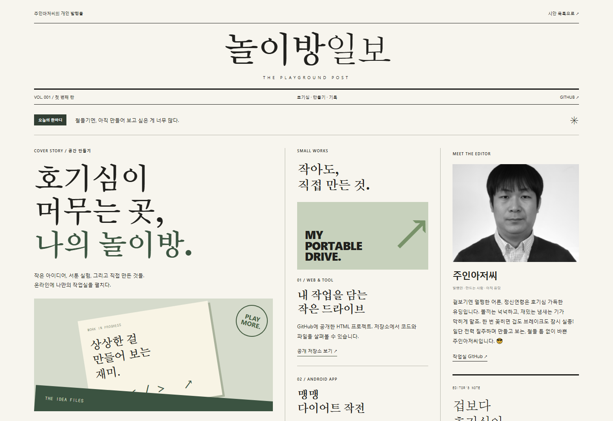
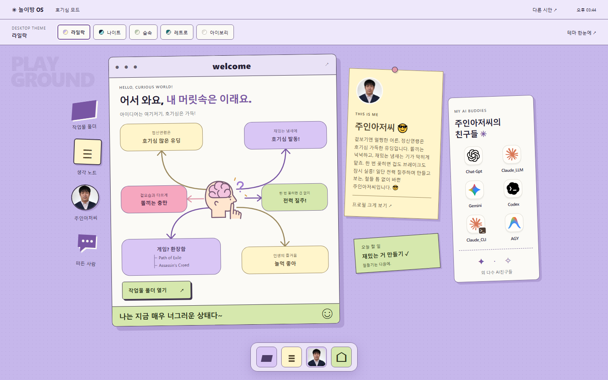
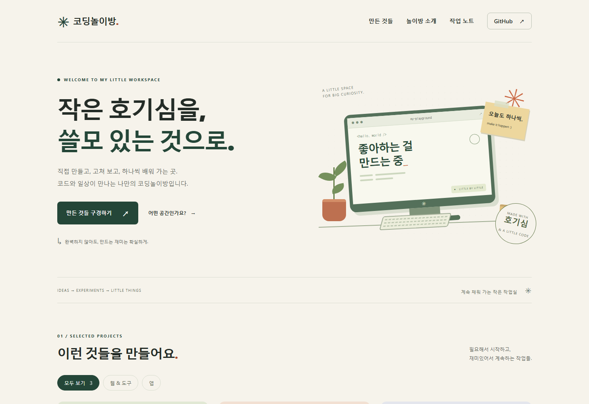

같은 주인아저씨,
전혀 다른 네 개의 놀이방.
색깔만 바꾸지 않았어요. 화면을 구성하고 둘러보는 방식부터 다릅니다.
마음에 드는 화면을 누르면 실제로 구경할 수 있어요.
주인아저씨 😎철들 틈 없이, 만드는 중.

A / THE EXHIBITION
크게, 시원하게. 전시형
대형 타이포 · 작품 한 장씩 넘기기 · 아래쪽 프로필 띠

B / THE EDITORIAL
읽는 재미가 있는 잡지형
신문 제호 · 비대칭 다단 편집 · 오른쪽 발행인 소개

C / THE PLAYGROUND OS
눌러 보는 재미. 데스크톱형
바탕화면 아이콘 · 직접 여는 창 · 구석의 프로필 메모

ORIGINAL / THE WORKSPACE
처음 보여드린 따뜻한 작업실
분할 첫 화면 · 세 개의 작업물 카드 · 소개 옆 프로필